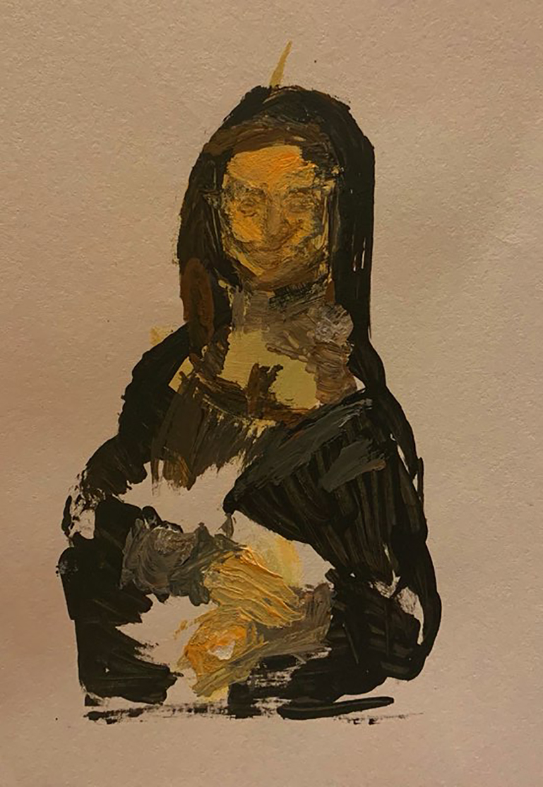

Art Description: “Nude can be art sometimes. It is how we are born to look like. Innocent, pure, without any decoration. There reflects her body in the mirror, trying to add layers in the drawing. “
Art Description: “An imitation of Mona Lisa by Leonardo Da Vinci. I leave the facial expression empty as well as I do not color certain areas to make it seem more mysterious and leave the audience space to do the imagination. “